options(repos = c(CRAN = "https://cloud.r-project.org"))
install.packages("pacman")
The downloaded binary packages are in
/var/folders/nr/x4l8hvc562g81px_9hrd30_r0000gn/T//RtmpeaKz55/downloaded_packagesHoa Nguyen Phuong
June 14, 2025
Clepper Jessen, an investigative journalist, is probing potential corruption in Oceanus following the temporary closure of Nemo Reef and the shadowy arrival of pop star Sailor Shift. A knowledge graph constructed from intercepted radio communications offers a detailed map of interactions between people and vessels over the past two weeks. By analyzing these communications — who talks to whom and about what — this report aims to uncover key social groupings, identify individuals using pseudonyms, and uncover hidden networks that may be linked to corruption to support the investigation.
This analysis contributes to Mini Challenge 3 by focusing on two key investigative angles: uncovering group structures within the communication network, and identifying individuals who may be hiding behind pseudonyms. The aim is to support Clepper Jessen in understanding how people and vessels are associated—both explicitly and covertly—through intercepted radio communications.
Specifically, this report addresses:
Q2a: Use visual analytics to uncover interactions and relationships between vessels and individuals in the network.
Q2b: Identify groups that are closely associated and infer the dominant topics for each.
Q3a: Detect the use of pseudonyms within the network and assess which identities those pseudonyms refer to.
Q3b: Explain how visual analytics can help reveal common identities hidden behind pseudonyms.
This submission will constitute the middle part of the team’s Mini Challenge 3 report. The first part (Q1) was completed by Van, focusing on temporal communication patterns. This section, prepared by Hoa, addresses Q2 and Q3a–3b, uncovering key interactions and relationships among individuals and vessels, detecting communication clusters, and identifying pseudonym usage. The final part (Q4 and Reflection) is completed by Summer, who investigates Nadia Conti’s actions and reflects on the overall analytical process.
For the first part go to Van’s page
For the last part go to Summer’s page
All analysis and visualizations in this report are conducted using RStudio and Quarto, leveraging R’s data wrangling and visualization capabilities. The analysis primarily relies on the tidyverse suite for data transformation, and network visualization libraries such as tidygraph and ggraph to explore entity relationships and communication patterns. These tools enable efficient manipulation of the knowledge graph and the creation of visuals that support pattern recognition and pseudonym detection.
To ensure reproducibility and a smooth development environment, the following packages are loaded using the pacman::p_load() function. If pacman is not already installed, it can be added as follows:
The downloaded binary packages are in
/var/folders/nr/x4l8hvc562g81px_9hrd30_r0000gn/T//RtmpeaKz55/downloaded_packagesThen load the necessary libraries:
These packages provide the foundation for data preparation, exploratory data analysis, and the network-based visual storytelling required to address the challenging questions.
The dataset used in this analysis is a structured knowledge graph derived from intercepted radio communications on Oceanus over a two-week period. Each node in the graph represents an entity—such as a person, vessel, or pseudonym—while edges represent interactions, such as sending or receiving a message. Edge attributes include timestamps, relationship types, message content, and evidence links. A full breakdown of node types, attributes, and edge semantics is provided in the appendix.
This dataset provides the foundation for analyzing communication behavior, mapping social structures, and detecting alias usage. It enables us to investigate both explicit and inferred relationships, such as who is speaking to whom, who mentions which vessel, and how pseudonyms like “Boss” or “The Lookout” are embedded in the communication network.
We begin by loading the raw knowledge graph and its schema using the jsonlite package. The main data file (MC3_graph.json) contains two primary components: nodes and edges, which represent entities and their interactions. The accompanying schema file (MC3_schema.json) provides structural metadata that helps us understand the types and attributes of each node and edge in the graph.
These files form the foundation for all subsequent data wrangling and analysis. In the next steps, we will explore their structure and extract relevant features to support our investigation into entity relationships and pseudonym usage.
Before proceeding with data wrangling, we first inspect the structure of the knowledge graph using glimpse() to understand the overall layout of nodes and edges.
List of 5
$ directed : logi TRUE
$ multigraph: logi FALSE
$ graph :List of 4
..$ mode : chr "static"
..$ edge_default: Named list()
..$ node_default: Named list()
..$ name : chr "VAST_MC3_Knowledge_Graph"
$ nodes :'data.frame': 1159 obs. of 31 variables:
..$ type : chr [1:1159] "Entity" "Entity" "Entity" "Entity" ...
..$ label : chr [1:1159] "Sam" "Kelly" "Nadia Conti" "Elise" ...
..$ name : chr [1:1159] "Sam" "Kelly" "Nadia Conti" "Elise" ...
..$ sub_type : chr [1:1159] "Person" "Person" "Person" "Person" ...
..$ id : chr [1:1159] "Sam" "Kelly" "Nadia Conti" "Elise" ...
..$ timestamp : chr [1:1159] NA NA NA NA ...
..$ monitoring_type : chr [1:1159] NA NA NA NA ...
..$ findings : chr [1:1159] NA NA NA NA ...
..$ content : chr [1:1159] NA NA NA NA ...
..$ assessment_type : chr [1:1159] NA NA NA NA ...
..$ results : chr [1:1159] NA NA NA NA ...
..$ movement_type : chr [1:1159] NA NA NA NA ...
..$ destination : chr [1:1159] NA NA NA NA ...
..$ enforcement_type : chr [1:1159] NA NA NA NA ...
..$ outcome : chr [1:1159] NA NA NA NA ...
..$ activity_type : chr [1:1159] NA NA NA NA ...
..$ participants : int [1:1159] NA NA NA NA NA NA NA NA NA NA ...
..$ thing_collected :'data.frame': 1159 obs. of 2 variables:
.. ..$ type: chr [1:1159] NA NA NA NA ...
.. ..$ name: chr [1:1159] NA NA NA NA ...
..$ reference : chr [1:1159] NA NA NA NA ...
..$ date : chr [1:1159] NA NA NA NA ...
..$ time : chr [1:1159] NA NA NA NA ...
..$ friendship_type : chr [1:1159] NA NA NA NA ...
..$ permission_type : chr [1:1159] NA NA NA NA ...
..$ start_date : chr [1:1159] NA NA NA NA ...
..$ end_date : chr [1:1159] NA NA NA NA ...
..$ report_type : chr [1:1159] NA NA NA NA ...
..$ submission_date : chr [1:1159] NA NA NA NA ...
..$ jurisdiction_type: chr [1:1159] NA NA NA NA ...
..$ authority_level : chr [1:1159] NA NA NA NA ...
..$ coordination_type: chr [1:1159] NA NA NA NA ...
..$ operational_role : chr [1:1159] NA NA NA NA ...
$ edges :'data.frame': 3226 obs. of 5 variables:
..$ id : chr [1:3226] "2" "3" "5" "3013" ...
..$ is_inferred: logi [1:3226] TRUE FALSE TRUE TRUE TRUE TRUE ...
..$ source : chr [1:3226] "Sam" "Sam" "Sam" "Sam" ...
..$ target : chr [1:3226] "Relationship_Suspicious_217" "Event_Communication_370" "Event_Assessment_600" "Relationship_Colleagues_430" ...
..$ type : chr [1:3226] NA "sent" NA NA ...List of 1
$ schema:List of 2
..$ nodes:List of 3
.. ..$ Entity :List of 2
.. ..$ Event :List of 2
.. ..$ Relationship:List of 2
..$ edges:List of 3
.. ..$ description: chr "Connections between nodes in the knowledge graph"
.. ..$ is_inferred: chr "bool"
.. ..$ types :'data.frame': 6 obs. of 5 variables:The graph structure contains:
1159 nodes, each representing an entity, event, or relationship (Unlike traditional network graphs where nodes represent only entities and edges represent relationships, the VAST Challenge MC3 knowledge graph treats relationships as nodes too.)
3226 edges, which describe the connections between these nodes
Nodes vary by type and sub_type, and contain attributes such as label, name, and a large number of optional fields (e.g., timestamp, content, assessment_type) depending on the node’s sub_type
The schema file describes the expected structure and data types for each node and edge type. It confirms that the dataset follows a consistent schema, but many fields are sparse due to their relevance only to specific node types.
Some observations are:
The dataset contains a large number of attributes, but most are sparsely populated, which is expected, as different node types carry different metadata.
Communication Event nodes are of particular interest for this analysis, as they contain the message content and timestamps—crucial for exploring interaction patterns, associated groups, and pseudonym usage.
Many names appear under label and name fields, including potential aliases. These will need to be cross-checked and standardized for accurate network mapping.
We will also need to clean and enrich the data by:
Converting timestamp fields to datetime
Isolating sender-receiver relationships
Linking communication content back to referenced entities (e.g., vessels or pseudonyms mentioned)
These steps are foundational for tracing communication & relationships, uncovering social groups, and identifying pseudonym patterns—all central to answering Questions 2 and 3.
To prepare for further analysis, we extract the graph’s nodes and edges components into tidy tibbles. This allows us to explore, filter, and join the data more efficiently using dplyr and tidyverse tools.
# A tibble: 6 × 31
type label name sub_type id timestamp monitoring_type findings content
<chr> <chr> <chr> <chr> <chr> <chr> <chr> <chr> <chr>
1 Entity Sam Sam Person Sam <NA> <NA> <NA> <NA>
2 Entity Kelly Kelly Person Kelly <NA> <NA> <NA> <NA>
3 Entity Nadia … Nadi… Person Nadi… <NA> <NA> <NA> <NA>
4 Entity Elise Elise Person Elise <NA> <NA> <NA> <NA>
5 Entity Liam T… Liam… Person Liam… <NA> <NA> <NA> <NA>
6 Entity Samant… Sama… Person Sama… <NA> <NA> <NA> <NA>
# ℹ 22 more variables: assessment_type <chr>, results <chr>,
# movement_type <chr>, destination <chr>, enforcement_type <chr>,
# outcome <chr>, activity_type <chr>, participants <int>,
# thing_collected <df[,2]>, reference <chr>, date <chr>, time <chr>,
# friendship_type <chr>, permission_type <chr>, start_date <chr>,
# end_date <chr>, report_type <chr>, submission_date <chr>,
# jurisdiction_type <chr>, authority_level <chr>, coordination_type <chr>, …# A tibble: 6 × 5
id is_inferred source target type
<chr> <lgl> <chr> <chr> <chr>
1 2 TRUE Sam Relationship_Suspicious_217 <NA>
2 3 FALSE Sam Event_Communication_370 sent
3 5 TRUE Sam Event_Assessment_600 <NA>
4 3013 TRUE Sam Relationship_Colleagues_430 <NA>
5 <NA> TRUE Sam Relationship_Friends_272 <NA>
6 <NA> TRUE Sam Relationship_Colleagues_215 <NA> The nodes_tbl contains 1,159 rows and 31 columns, including attributes like type, label, sub_type, and content. Meanwhile, the edges_tbl captures 3,226 connections among these nodes, indicating the flow of communication or relationships via source, target, and type.
To understand the distribution of node types, we generate a quick summary:
Most nodes represent Events, which includes communication, assessments, and movements. These are the core of the graph’s activity and will be our main focus moving forward. The remaining nodes represent Relationships (such as colleagues) and Entities (such as people and vessels).
This breakdown helps guide our filtering in the next steps—particularly in isolating Communication Events and linking them to relevant people, vessels, and aliases for Questions 2 and 3.
To better understand the characteristics of the dataset, we use the ExpCatViz() function from the SmartEDA package to examine the distribution of key categorical variables within nodes_tbl.
[[1]]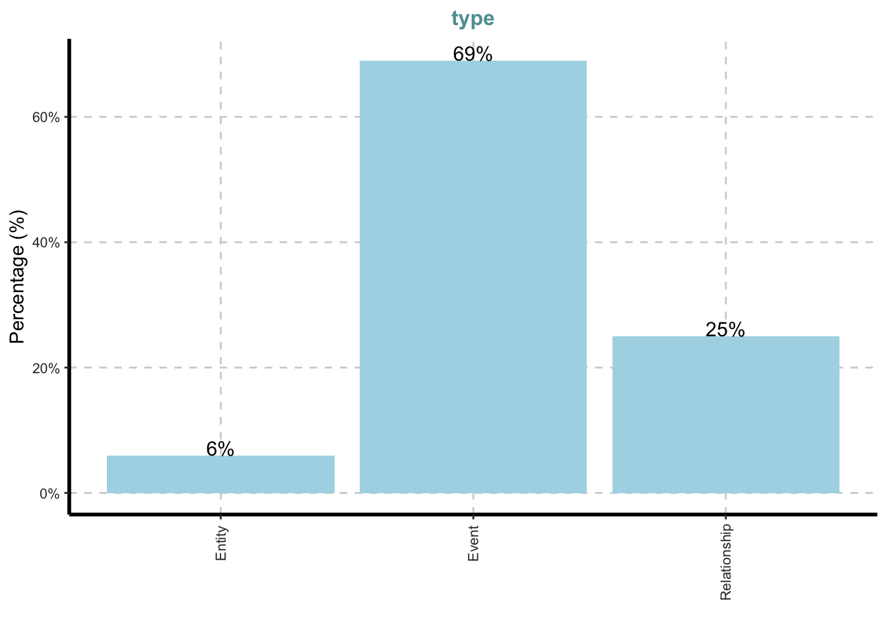
[[2]]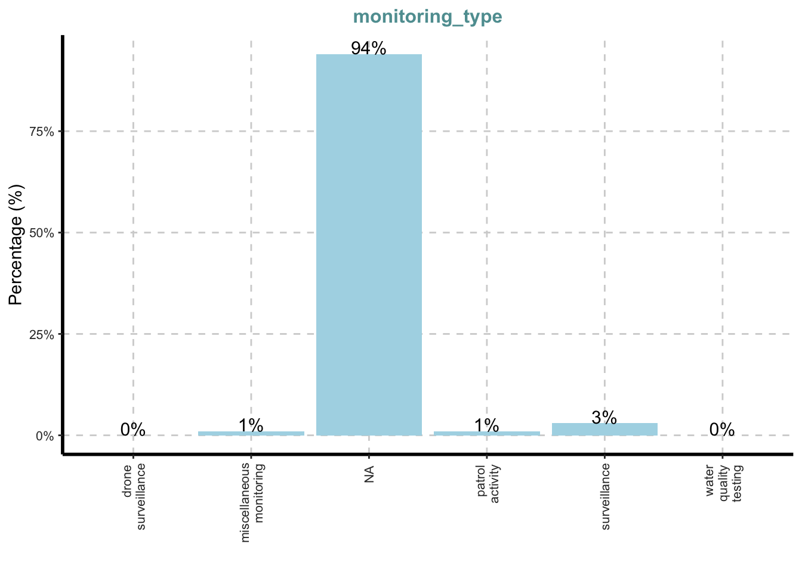
[[3]]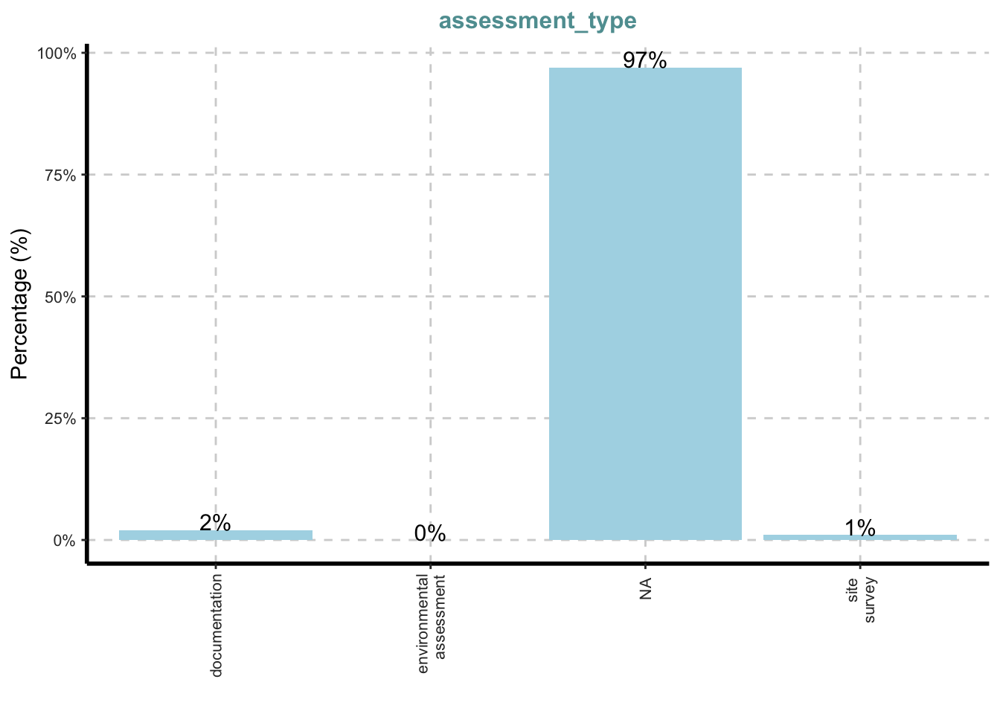
[[4]]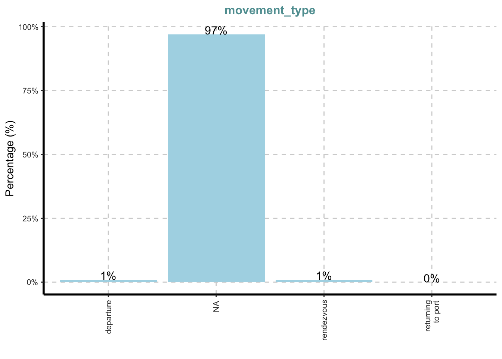
[[5]]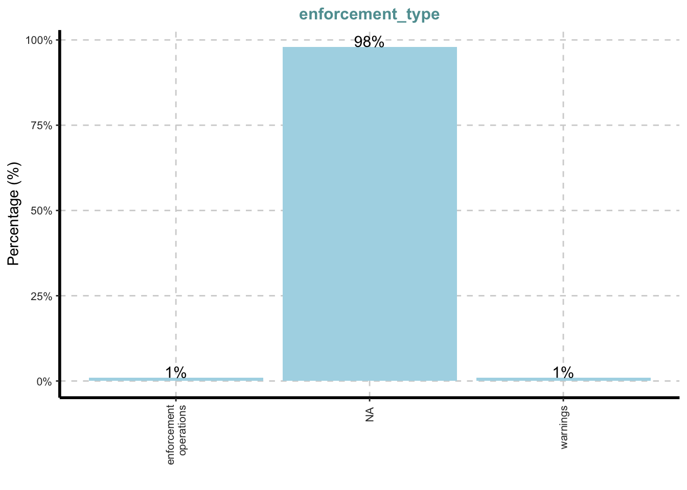
[[6]]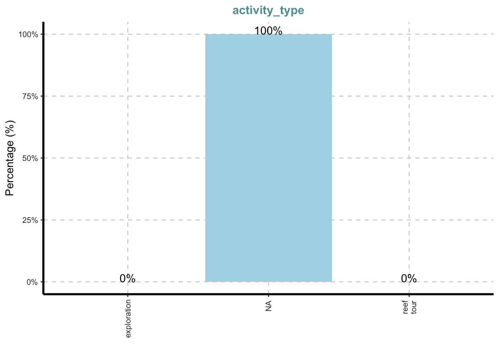
[[7]]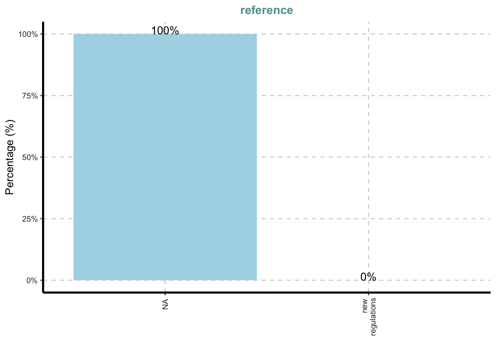
[[8]]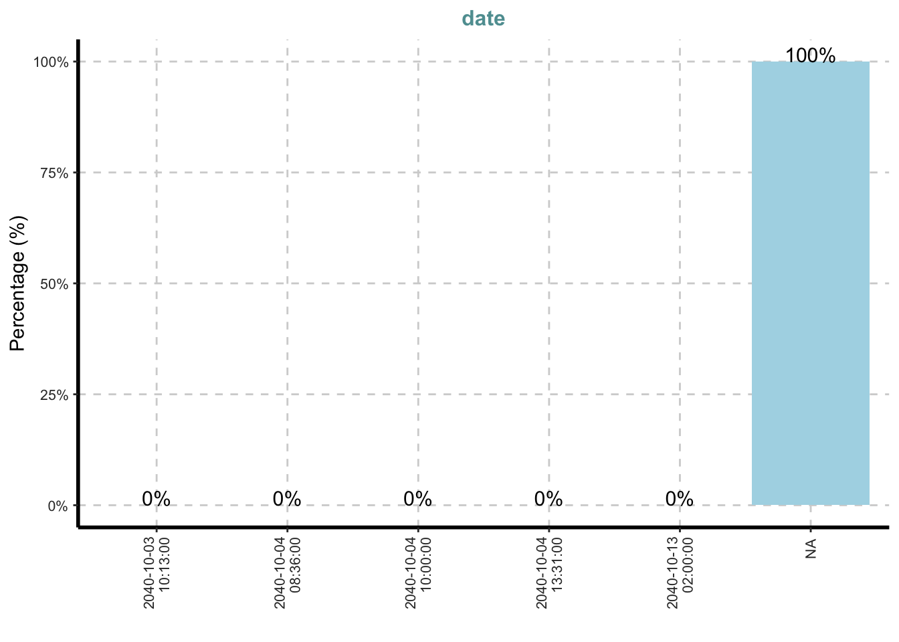
[[9]]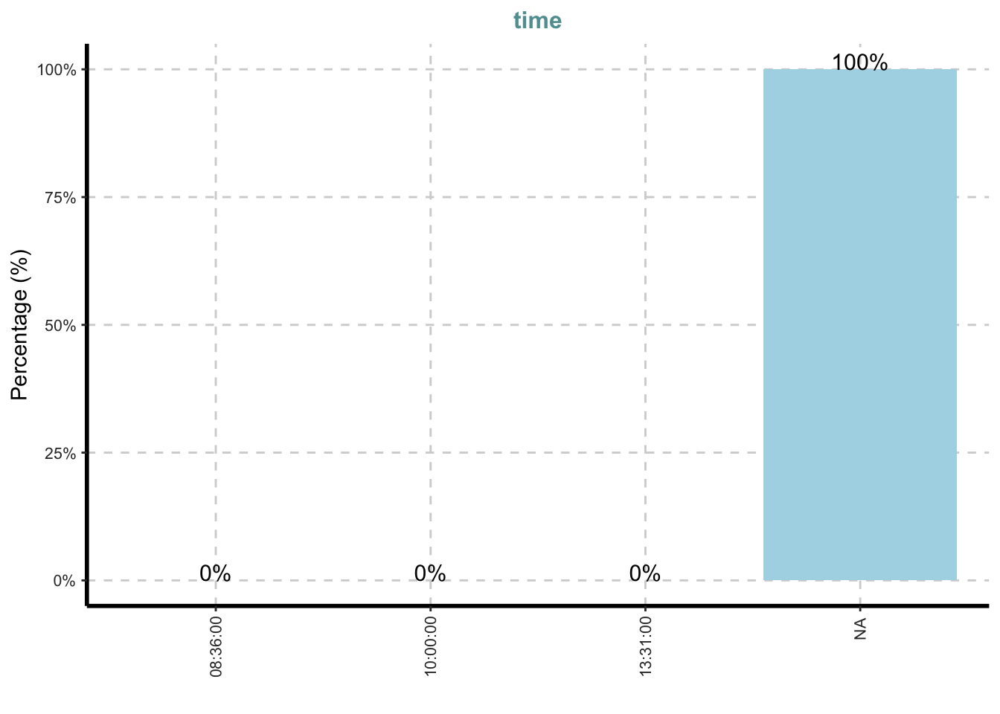
[[10]]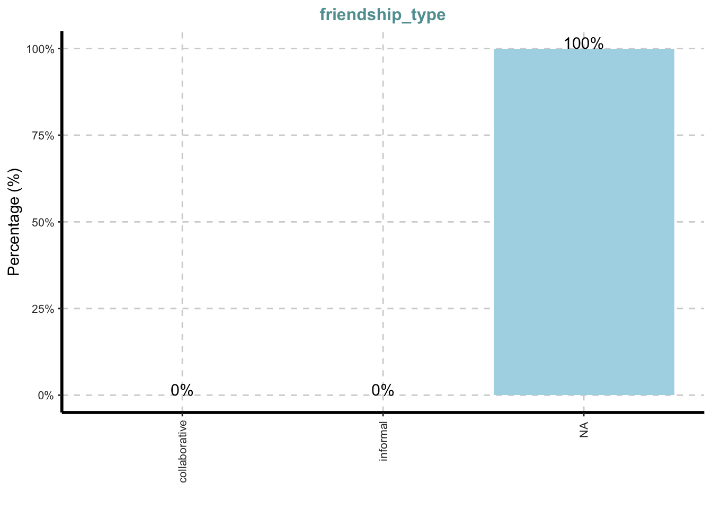
[[11]]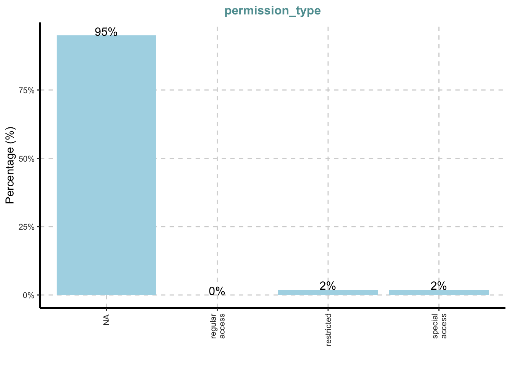
[[12]]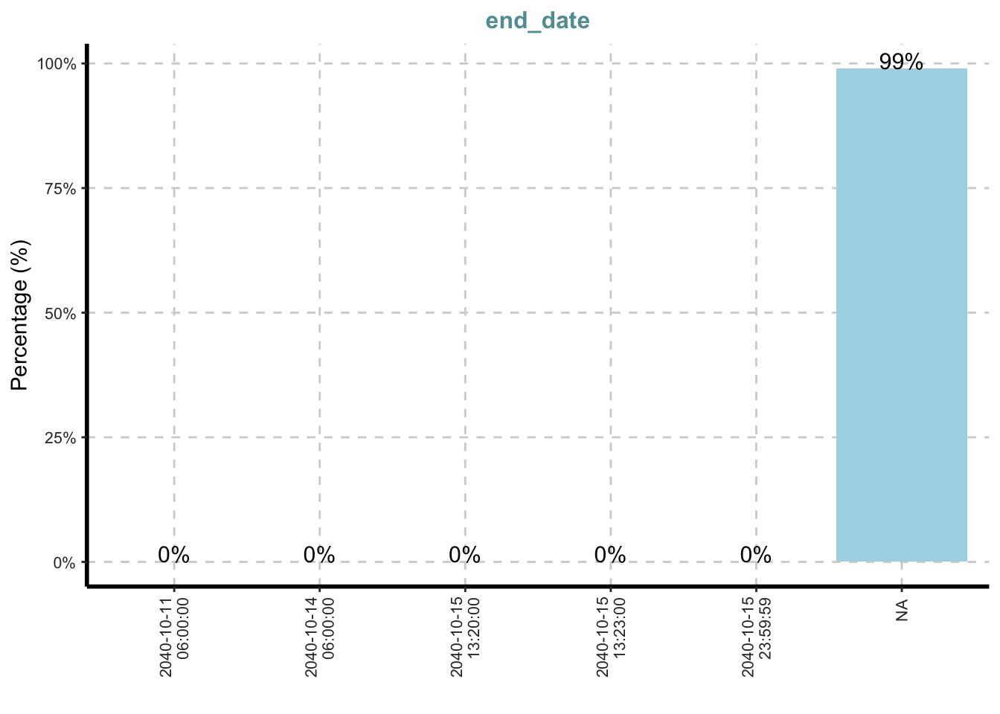
[[13]]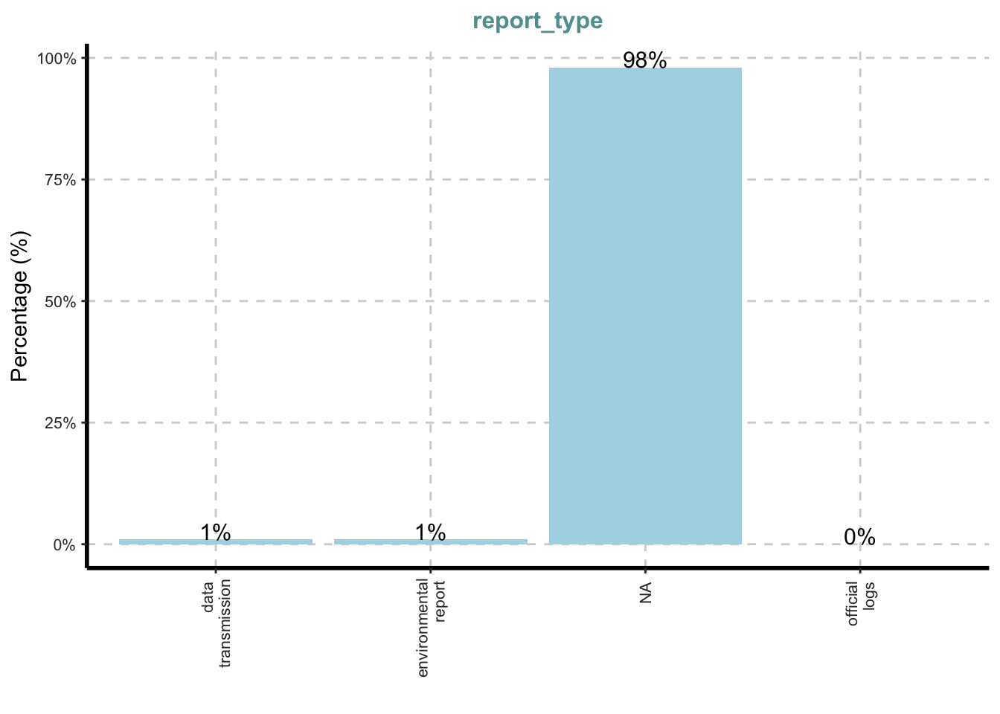
[[14]]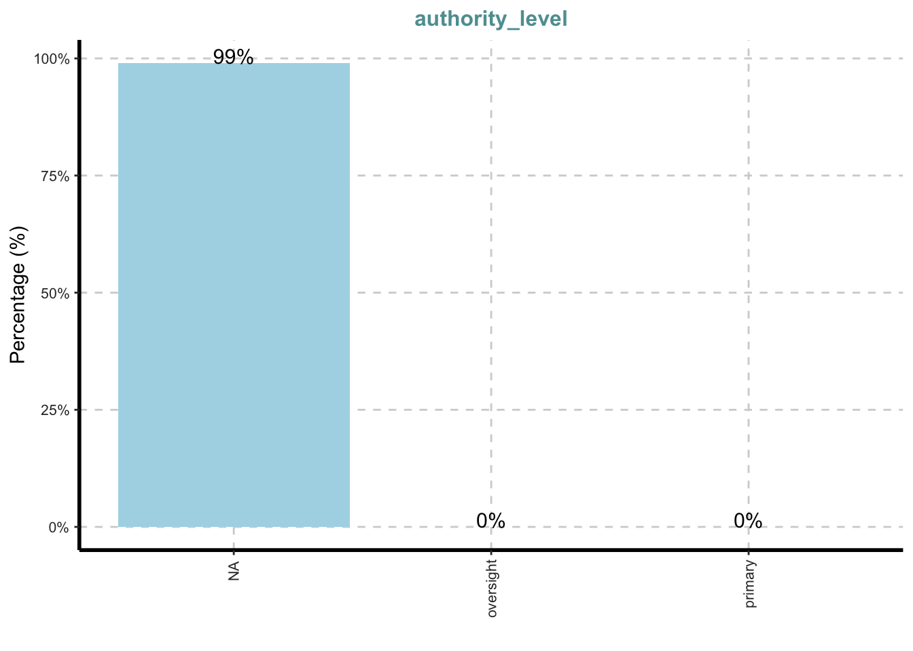
This reveals several useful insights:
The majority of nodes are of type Event (69%), followed by Relationship (25%) and Entity (6%). This confirms that the dataset is heavily event-driven, reinforcing the need to filter and analyze communication-related events in depth.
Most of the categorical fields—such as monitoring_type, assessment_type, movement_type, and enforcement_type—are overwhelmingly sparse, with over 90% of values marked as NA. These attributes are subtype-specific and not useful for broad filtering.
Variables like activity_type, reference, date, and time show close to 100% missingness, suggesting they were either not captured in the graph or only used in a few isolated node types.
These early signals reinforce the idea that the most promising and information-rich nodes for analysis are Communication Event nodes, which are expected to contain fields like content, timestamp, and be connected to both people and vessels.
To complement our earlier inspection of node attributes, we examine the categorical distribution in the edges_tbl using ExpCatViz().
This reveals the breakdown of type within the edges:
The two most frequent edge types are evidence_for (32%) and NA (also 32%). The former indicates that a communication or event node is cited as evidence for another node (typically a relationship or event).
sent and received edges each make up 18% of the total. These are especially important for identifying the flow of communication — i.e., who is sending and who is receiving messages — which will directly support Q2a (interactions) and Q3a (pseudonym tracking).
A large number of edge types are marked as NA, which may indicate either missing labels or simple links between nodes (such as connecting a person to a vessel) that don’t fall under a specific relationship category.
This insight confirms that sent and received edges are essential for reconstructing directed communication paths, while evidence_for edges can later help establish which events support known relationships — a detail that may be helpful in identifying aliases.
To analyze interaction & relationships, recognize groups, and identify pseudonym usage, we perform a series of data cleaning and wrangling steps. These steps will allow us to isolate communication events, trace sender–receiver interactions, and prepare a clean dataset for visual exploration.
The main data preparation steps include:
Extracting communication events with timestamps
Cleaning and formatting timestamp data
Identifying sender and receiver relationships
Joining sender-receiver pairs to their respective names
Merging all relevant fields into a single tidy dataframe for analysis
Saving the cleaned dataset for reuse in subsequent sections
The first step filters out all non-communication events. We focus only on nodes of type == "Event" and sub_type == "Communication", as these contain the actual messages exchanged between people and vessels.
# A tibble: 6 × 31
type label name sub_type id timestamp monitoring_type findings content
<chr> <chr> <chr> <chr> <chr> <chr> <chr> <chr> <chr>
1 Event Communi… <NA> Communi… Even… 2040-10-… <NA> <NA> Hey Th…
2 Event Communi… <NA> Communi… Even… 2040-10-… <NA> <NA> Hey Th…
3 Event Communi… <NA> Communi… Even… 2040-10-… <NA> <NA> Sam, i…
4 Event Communi… <NA> Communi… Even… 2040-10-… <NA> <NA> Mrs. M…
5 Event Communi… <NA> Communi… Even… 2040-10-… <NA> <NA> Boss, …
6 Event Communi… <NA> Communi… Even… 2040-10-… <NA> <NA> Mrs. M…
# ℹ 22 more variables: assessment_type <chr>, results <chr>,
# movement_type <chr>, destination <chr>, enforcement_type <chr>,
# outcome <chr>, activity_type <chr>, participants <int>,
# thing_collected <df[,2]>, reference <chr>, date <chr>, time <chr>,
# friendship_type <chr>, permission_type <chr>, start_date <chr>,
# end_date <chr>, report_type <chr>, submission_date <chr>,
# jurisdiction_type <chr>, authority_level <chr>, coordination_type <chr>, …This gives us a subset of nodes that represent intercepted communications. These records include message content, associated timestamps, and unique IDs that can be matched to senders, receivers, and evidence links.
To prepare for linking communication events with sender and receiver nodes, we extract only the essential attributes:
id: unique identifier of each communication event node
timestamp: the time the message was recorded
content: the message text, which may contain names, pseudonyms, or references to vessels
comm_events <- comm_events %>%
select(id, timestamp = timestamp, content = content)
head(comm_events)# A tibble: 6 × 3
id timestamp content
<chr> <chr> <chr>
1 Event_Communication_1 2040-10-01 08:09:00 Hey The Intern, it's The Lookout! J…
2 Event_Communication_2 2040-10-01 08:10:00 Hey The Lookout, The Intern here! I…
3 Event_Communication_3 2040-10-01 08:13:00 Sam, it's Kelly! Let's meet at Sunr…
4 Event_Communication_5 2040-10-01 08:16:00 Mrs. Money, it's The Intern. Just c…
5 Event_Communication_6 2040-10-01 08:19:00 Boss, it's Mrs. Money. I've reviewe…
6 Event_Communication_7 2040-10-01 08:21:00 Mrs. Money, this is Boss. I'm avail…This step gives us a concise working table with only the fields required for further merging and text analysis. The content column will be particularly important for detecting pseudonyms and identifying entities mentioned in the communication — both of which are key to answering Q2b and Q3a.
In the next step, we’ll clean and standardize the timestamp to support time-based grouping and visualizations.
The timestamp field was originally stored as a character string. To enable time-based filtering, aggregation, and visualizations, we convert it to proper datetime format using ymd_hms() from the lubridate package.
# A tibble: 6 × 3
id timestamp content
<chr> <dttm> <chr>
1 Event_Communication_1 2040-10-01 08:09:00 Hey The Intern, it's The Lookout! J…
2 Event_Communication_2 2040-10-01 08:10:00 Hey The Lookout, The Intern here! I…
3 Event_Communication_3 2040-10-01 08:13:00 Sam, it's Kelly! Let's meet at Sunr…
4 Event_Communication_5 2040-10-01 08:16:00 Mrs. Money, it's The Intern. Just c…
5 Event_Communication_6 2040-10-01 08:19:00 Boss, it's Mrs. Money. I've reviewe…
6 Event_Communication_7 2040-10-01 08:21:00 Mrs. Money, this is Boss. I'm avail…This transformation ensures that the timestamp column is now recognized as a POSIXct object (
Next, we’ll move on to identifying sender and receiver connections by working with the edges_tbl.
To identify who is sending and receiving each message, we filter the edges_tbl to retain only edges of type “sent” or “received”. These indicate a directional connection between an entity (usually a person) and a communication event.
comm_edges <- edges_tbl %>%
filter(type %in% c("sent", "received")) %>%
select(source, target, type)
head(comm_edges)# A tibble: 6 × 3
source target type
<chr> <chr> <chr>
1 Sam Event_Communication_370 sent
2 Kelly Event_Communication_3 sent
3 Kelly Event_Communication_443 sent
4 Nadia Conti Event_Communication_331 sent
5 Nadia Conti Event_Communication_334 sent
6 Nadia Conti Event_Communication_529 sent In this structure:
The source column contains the person or entity initiating the edge
The target column refers to the communication event
The type column tells us whether this is a sent or received connection
This step is crucial for establishing sender–receiver pairs in later stages. By reshaping and joining this filtered edge list, we’ll be able to reconstruct the full communication path between individuals — a core component of answering Q2a (interaction mapping) and Q3a (alias tracking).
Next, we’ll reshape this into a wide format with both sender and receiver in the same row.
Next, we break down the filtered comm_edges into two separate tables: one for senders and one for receivers. This step allows us to later combine both perspectives of each communication into a single row.
In the senders table, we treat the source as the person sending the message and the target as the message node (message_id)
In the receivers table, we flip that: the target is the receiver and the source is the message_id
By renaming columns consistently, we can later join both tables using the shared message_id, giving us a clean structure of:
message_id | sender | receiver
This format is key to visualizing direct interactions between individuals and spotting recurring patterns in communication and alias usage.
Now that we have isolated senders and receivers, we join the two datasets using message_id to form a complete sender–receiver pair for each communication event.
# A tibble: 6 × 5
sender message_id type.x receiver type.y
<chr> <chr> <chr> <chr> <chr>
1 Sam Event_Communication_370 sent Kelly received
2 Kelly Event_Communication_3 sent Sam received
3 Kelly Event_Communication_443 sent Sam received
4 Nadia Conti Event_Communication_331 sent Haacklee Harbor received
5 Nadia Conti Event_Communication_334 sent Oceanus City Council received
6 Nadia Conti Event_Communication_529 sent Liam Thorne receivedThe resulting dataframe gives us one row per message, including:
sender and receiver names
The corresponding message_id
Edge types (sent, received) — useful for validating directionality if needed
This structure is foundational for building a person-to-person interaction network, detecting frequent communication pairs, and identifying clusters of closely associated individuals (Q2b). It also enables us to trace who may be using pseudonyms across multiple interactions (Q3a).
In the next step, we’ll enrich this structure by joining with the actual communication content and timestamps.
To complete the communication record, we join the sender–receiver pairs with the original message content and timestamps. This creates a single tidy dataset that combines who spoke to whom, when, and what was said.
# A tibble: 6 × 7
sender message_id type.x receiver type.y timestamp content
<chr> <chr> <chr> <chr> <chr> <dttm> <chr>
1 Sam Event_Communic… sent Kelly recei… 2040-10-05 10:48:00 Hey Ke…
2 Kelly Event_Communic… sent Sam recei… 2040-10-01 08:13:00 Sam, i…
3 Kelly Event_Communic… sent Sam recei… 2040-10-07 08:11:00 Hey Sa…
4 Nadia Conti Event_Communic… sent Haackle… recei… 2040-10-05 09:45:00 Haackl…
5 Nadia Conti Event_Communic… sent Oceanus… recei… 2040-10-05 09:49:00 This i…
6 Nadia Conti Event_Communic… sent Liam Th… recei… 2040-10-08 08:18:00 Liam, …This final joined table includes:
sender and receiver
timestamp (as POSIXct datetime)
content of the intercepted message
communication direction (sent and received tags)
With this full view, we are now equipped to:
Detect frequently interacting individuals or vessels (Q2a)
Identify closely connected groups (Q2b)
Trace pseudonym usage within message content (Q3a)
In the next step, we’ll optionally clean up column names and remove any unnecessary fields before saving the output for visual analytics.
To ensure consistency in naming across our dataset, we extract official labels for all entities. This is particularly useful for handling pseudonyms and identifying duplicate or ambiguous names in later analysis.
entity_labels <- nodes_tbl %>%
filter(type == "Entity") %>%
select(id, label, sub_type)
head(entity_labels)# A tibble: 6 × 3
id label sub_type
<chr> <chr> <chr>
1 Sam Sam Person
2 Kelly Kelly Person
3 Nadia Conti Nadia Conti Person
4 Elise Elise Person
5 Liam Thorne Liam Thorne Person
6 Samantha Blake Samantha Blake Person This lookup table contains:
id: unique identifier for each person or vessel
label: display name (e.g., “Kelly”, “Samantha Blake”)
sub_type: further categorizes the entity (e.g., Person, Vessel)
We will use this to join readable labels to both senders and receivers in our full dataset. This step is essential for:
Clarifying who the sender/receiver really is (especially if id is used inconsistently)
Tracking pseudonym usage and overlaps (Q3a)
Building clean visualizations of communication networks (Q2a–b)
To finalize the dataset, we enrich the full communication table by joining sender and receiver labels (and types) from the entity_labels lookup. This gives us a human-readable structure, ready for downstream analysis and visualization.
comm_full <- comm_full %>%
left_join(entity_labels, by = c("sender" = "id")) %>%
rename(sender_label = label, sender_type = sub_type) %>%
left_join(entity_labels, by = c("receiver" = "id")) %>%
rename(receiver_label = label, receiver_type = sub_type)
head(comm_full)# A tibble: 6 × 11
sender message_id type.x receiver type.y timestamp content
<chr> <chr> <chr> <chr> <chr> <dttm> <chr>
1 Sam Event_Communic… sent Kelly recei… 2040-10-05 10:48:00 Hey Ke…
2 Kelly Event_Communic… sent Sam recei… 2040-10-01 08:13:00 Sam, i…
3 Kelly Event_Communic… sent Sam recei… 2040-10-07 08:11:00 Hey Sa…
4 Nadia Conti Event_Communic… sent Haackle… recei… 2040-10-05 09:45:00 Haackl…
5 Nadia Conti Event_Communic… sent Oceanus… recei… 2040-10-05 09:49:00 This i…
6 Nadia Conti Event_Communic… sent Liam Th… recei… 2040-10-08 08:18:00 Liam, …
# ℹ 4 more variables: sender_label <chr>, sender_type <chr>,
# receiver_label <chr>, receiver_type <chr>This results in a clean, consolidated dataset containing:
Sender and receiver IDs
Their full labels (e.g., “Nadia Conti”)
Their types (e.g., Person, Organization)
Timestamp and message content
Finally, we export the processed dataset to CSV format so it can be reused by the whole team for answering specific questions (Q1, Q2, Q3, Q4).
This communications_full.csv will be the basis for identifying social clusters, alias patterns, and communication dynamics across Oceanus.
To answer these two questions, we construct a interactive network graph showing who communicates with whom based on the intercepted radio messages.
We use the cleaned comm_full dataset and aggregate all communications into a sender–receiver edge list. Each edge represents at least one message sent from one entity to another. The resulting network allows us to examine the structure and density of interpersonal or inter-organizational interactions.
This interactive network graph addresses Questions 2a and 2b by uncovering key communication dynamics and community structures within the intercepted message data.
• Node Labels: Each node is labeled directly on the graph with its name (or pseudonym), allowing for easy identification.
• Edge Direction: Arrows indicate message flow, showing who sent a message to whom.
• Node Size: Proportional to the number of messages handled (sent + received). Larger nodes are high-volume communicators and possible influencers or intermediaries.
• Tooltip Details: Hovering over a node reveals the number of messages sent & received of that node.
• Node Color & Group Labels: Each node represents an individual or entity, and is colored based on its communication cluster, which is automatically detected using the Louvain community detection algorithm. A cluster refers to a group of nodes that communicate more frequently with each other than with nodes outside their group, which might reflect underlying real-world affiliations or coordinated behavior. From the communication network, five distinct clusters are identified.
• Filter: Use the “Select by id” dropdown at the top to highlight an individual node along with all entities it communicates with directly.
• Interactivity: It is possible to zoom in and out the graph to explore dense areas more easily.
library(igraph)
library(visNetwork)
library(dplyr)
edge_list <- comm_full %>%
select(sender_label, receiver_label) %>%
filter(!is.na(sender_label) & !is.na(receiver_label)) %>%
count(sender_label, receiver_label, name = "weight")
graph_comm <- graph_from_data_frame(edge_list, directed = TRUE)
# Step 1: Create igraph object
graph_comm <- graph_from_data_frame(edge_list, directed = TRUE)
# Step 2: Louvain Clustering
clusters <- cluster_walktrap(graph_comm)
# Step 3: Define cluster labels (Cluster 1 to 5)
cluster_map <- c(
"1" = "Cluster 1",
"2" = "Cluster 2",
"3" = "Cluster 3",
"4" = "Cluster 4",
"5" = "Cluster 5"
)
# Step 4: Compute node-level info
deg_sent <- degree(graph_comm, mode = "out")
deg_recv <- degree(graph_comm, mode = "in")
nodes <- data.frame(
id = V(graph_comm)$name,
label = V(graph_comm)$name,
title = paste0("📤 Sent: ", deg_sent, "<br>📥 Received: ", deg_recv),
group = cluster_map[as.character(clusters$membership)],
value = deg_sent + deg_recv
)
# Step 5: Factor group for legend order (Cluster 1 → Cluster 5)
nodes$group <- factor(nodes$group, levels = paste0("Cluster ", 1:5))
# Step 6: Prepare edges
edges <- data.frame(
from = as_edgelist(graph_comm)[, 1],
to = as_edgelist(graph_comm)[, 2],
arrows = "to"
)
# Step 7: Render interactive graph
visNetwork(nodes, edges) %>%
visOptions(
highlightNearest = TRUE,
nodesIdSelection = list(enabled = TRUE)
) %>%
visLegend() %>%
visPhysics(solver = "forceAtlas2Based") %>%
visLayout(randomSeed = 123)• The largest nodes by size like Mako, Oceanus City Council, and Reef Guardians represent the most active communicators, each with a high total number of messages sent and received. In contrast to these dominant hubs, nodes like Port Security and City Officials participate less frequently, possibly playing supporting roles.
=> The structure of the communication network is concentrated, with a few dominant communicators and several peripheral participants.This suggests an underlying hierarchy or coordination, potentially reflecting real-world group leadership and operational dynamics.
• Some entities, such as Mako, primarily receive messages, while others, like The Lookout, mostly send them. However, there are also individuals that are highly active in both sending and receiving messages, such as Nadia Conti, which probably be intermediaries or coordinators among different groups.
=> The directional patterns assist in identifying influencers or information flow sources, which can be further explored in later clustering (Q2b) and alias tracing (Q3).
The communication network reveals five distinct clusters, each representing a group of entities that communicate more frequently within their group/cluster than with outside entities, suggesting likely shared objectives or roles. The clusters were derived using the Louvain algorithm, which detects tightly connected groups within the network. Each cluster is color-coded for visual clarity.
🔴 Cluster 1 consists of 16 nodes: City Officials, Neptune, Small Fry, Davis, Remora, Mako, V. Miesel Shipping, Rodriguez, Nadia Conti, Elise, Sailor Shifts Team, Knowles, Glitters Team, Osprey, Smantha Blake, and Haacklee Harbor.
🟢 Cluster 2 consist of 15 nodes: Port Security, Defender, Serenity, Reef Guardian, Seawatch, Horizon, Sentinel, Green Guardians, Himark Harbor, Marlin, Paackland Harbor, Northern Light, Oceanus City Council, EcoVigil, and Liam Thorne.
🔵 Cluster 3 consists of 6 nodes: The Lookout, The Intern, Mrs. Money, Boss, The Middleman, and The Accountant.
🟣 Cluster 4 consists of 2 nodes: Sam and Kelly. These two entities barely communicate and, if they do, primarily interact with each other, as their only outside communication is with Cluster 3.
🟡 Cluster 5 consists of 2 nodes: Miranda Jordan and Clepper Jensen. These two entities barely communicate too and, if they do, only interact with each other. This makes their cluster completely isolated from the broader network, which indicates potential secrecy, independence, or exclusion from main operational flows.
As we can see, the network structure is well-organized: most entities belong to well-defined clusters with strong internal communication ties.
So what is the dominant focus or topic of communication within each cluster? To explore this, the content of all messages sent or received by members of each group is analyzed. By extracting the top 20 most frequently used keywords per cluster, recurring themes can be identified to better understand the likely roles, concerns, or affiliations of each group within the broader network.
# A tibble: 20 × 3
cluster word n
<dbl> <chr> <int>
1 1 mako 210
2 1 reef 177
3 1 nemo 159
4 1 equipment 151
5 1 remora 142
6 1 neptune 128
7 1 harbor 119
8 1 davis 99
9 1 team 98
10 1 tomorrow 94
11 1 miesel 80
12 1 operations 78
13 1 permit 74
14 1 operation 69
15 1 maintain 68
16 1 crew 65
17 1 nadia 65
18 1 protocols 65
19 1 documentation 63
20 1 himark 63# A tibble: 20 × 3
cluster word n
<dbl> <chr> <int>
1 2 reef 427
2 2 nemo 310
3 2 harbor 201
4 2 council 196
5 2 city 159
6 2 vessels 156
7 2 oceanus 141
8 2 equipment 131
9 2 green 125
10 2 guardian 125
11 2 guardians 125
12 2 sentinel 104
13 2 environmental 100
14 2 closure 88
15 2 vessel 86
16 2 horizon 85
17 2 documentation 83
18 2 himark 79
19 2 paackland 77
20 2 monitoring 73# A tibble: 20 × 3
cluster word n
<dbl> <chr> <int>
1 3 reef 128
2 3 nemo 120
3 3 money 93
4 3 intern 90
5 3 meeting 86
6 3 lookout 83
7 3 conservation 75
8 3 boss 61
9 3 tomorrow 57
10 3 middleman 51
11 3 vessels 44
12 3 bring 39
13 3 equipment 35
14 3 birdwatching 32
15 3 council 31
16 3 underwater 26
17 3 activity 25
18 3 financial 25
19 3 increased 25
20 3 discuss 24# A tibble: 20 × 3
cluster word n
<dbl> <chr> <int>
1 4 birdwatching 10
2 4 lookout 8
3 4 reef 8
4 4 tomorrow 8
5 4 kelly 6
6 4 sam 6
7 4 conservation 5
8 4 nemo 5
9 4 hey 4
10 4 perfect 4
11 4 rare 4
12 4 special 4
13 4 spotted 4
14 4 vessels 4
15 4 bring 3
16 4 crates 3
17 4 equipment 3
18 4 fragile 3
19 4 harbor 3
20 4 heard 3# A tibble: 20 × 3
cluster word n
<dbl> <chr> <int>
1 5 miranda 76
2 5 equipment 42
3 5 clepper 40
4 5 jensen 36
5 5 environmental 28
6 5 vessels 28
7 5 conservation 22
8 5 documents 20
9 5 rodriguez 20
10 5 document 18
11 5 harbor 18
12 5 security 18
13 5 vessel 18
14 5 council 16
15 5 reef 16
16 5 nemo 14
17 5 knowles 12
18 5 meeting 12
19 5 miesel 12
20 5 officials 12# Load required libraries
library(dplyr)
library(tidyr)
library(tidytext)
library(stringr)
library(igraph)
# Step 1: Extract node-cluster membership from graph
node_cluster <- data.frame(
label = V(graph_comm)$name,
cluster = clusters$membership
)
# Step 2: Join cluster membership to sender and receiver in comm_full
comm_with_cluster <- comm_full %>%
left_join(node_cluster, by = c("sender_label" = "label")) %>%
rename(sender_cluster = cluster) %>%
left_join(node_cluster, by = c("receiver_label" = "label")) %>%
rename(receiver_cluster = cluster)
# Step 3: Convert to long format — one row per message-cluster pair
comm_long <- comm_with_cluster %>%
select(content, sender_cluster, receiver_cluster) %>%
rename(message_content = content) %>%
pivot_longer(cols = c(sender_cluster, receiver_cluster),
names_to = "role", values_to = "cluster") %>%
filter(!is.na(cluster), !is.na(message_content))
# Step 4: Tokenize text and remove stop words
data("stop_words") # Load tidytext stop word list
tokens_by_cluster <- comm_long %>%
unnest_tokens(word, message_content) %>%
filter(!word %in% stop_words$word, str_detect(word, "[a-z]")) %>%
count(cluster, word, sort = TRUE)
# Step 5: Get top 10 keywords per cluster
top_keywords <- tokens_by_cluster %>%
group_by(cluster) %>%
slice_max(n, n = 20, with_ties = FALSE) %>%
arrange(cluster, desc(n)) %>%
ungroup()
# Step 6: Split into list of data frames by cluster
keyword_lists <- top_keywords %>%
group_by(cluster) %>%
group_split()
# (Optional) Name each list element
names(keyword_lists) <- paste0("Cluster_", sort(unique(top_keywords$cluster)))These most frequently used keywords in each cluster’s messages reveal the possible focus areas of each group:
Cluster 1 appears to be focused on maritime operations. Keywords like “equipment”, “harbor”, “operation(s)”, and “crew” suggest activity around marine logistics, vessel coordination, and technical operations — likely indicating a team involved in sea-based field operations or enforcement.
Cluster 2 centers around regulatory, environmental, and governance topics. Common terms such as “council”, “city”, “guardian(s)”, and “monitoring” suggest this group is tied to regulatory oversight, marine protection, and coastal coordination efforts.
Cluster 3 shows signs of being a coordinating or facilitative cluster. Top words like “meeting”, “tomorrow”, “birdwatching”, and “discuss” suggest involvement in administrative work, strategic planning, or cross-group information flow.
Cluster 4 is characterized by limited communication and does not contain any keywords of significant frequency. This lack of prominent terms makes it difficult to infer any clear thematic focus for the group.
Cluster 5 shows slightly more communication and includes certain frequently used terms. However, its complete isolation from the rest of the network limits contextual interpretation and suggests a potentially detached or non-integrated role.
To answer Question 3, this section builds on the earlier visual analytics and introduces new visualizations to examine pseudonym usage in greater detail. A bar chart is generated to show how frequently certain terms are mentioned in communications and a heatmap is generated to show which individuals are using them. These terms include both known pseudonyms identified by Clepper (“Boss” and “The Lookout”) and additional names suspected to be aliases — such as “The Intern,” “The Middleman,” “Mrs. Money,” “The Accountant.” etc. These suspected pseudonyms do not resemble typical personal or organizational names, yet they appear frequently in message content, suggesting they may be informally used aliases.
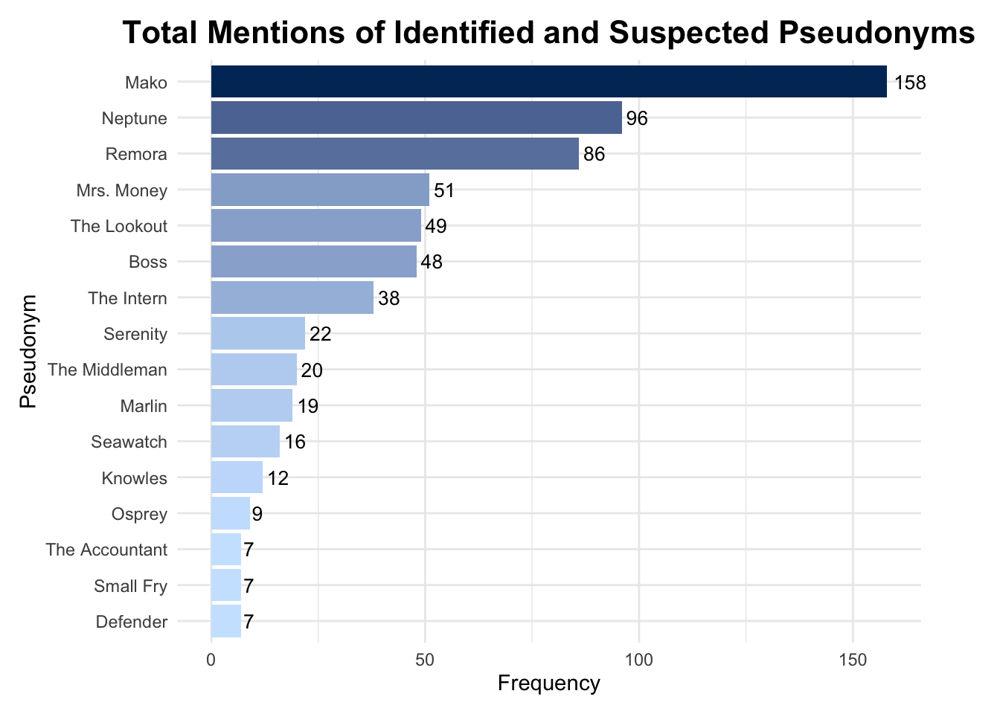
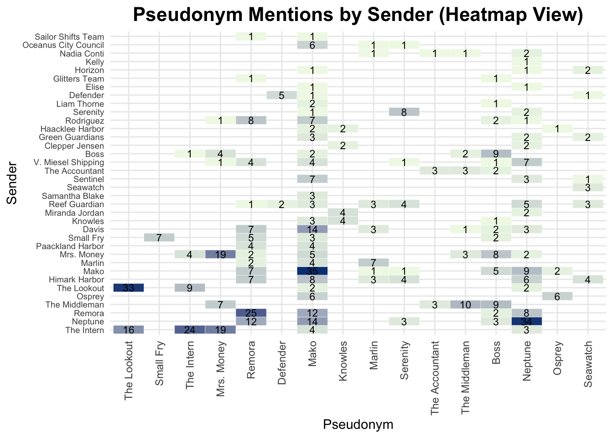
# Load required libraries
library(dplyr)
library(stringr)
library(tidyr)
library(ggplot2)
library(forcats)
# Step 1: Define list of pseudonym terms (identified + suspected)
pseudonym_terms <- c(
"Boss", "The Lookout", "The Intern", "The Middleman", "Mrs. Money",
"The Accountant", "Small Fry", "Neptune", "Knowles",
"Mako", "Remora", "Osprey", "Defender", "Serenity", "Seawatch", "Marlin"
)
# Step 2: Extract all mentions of pseudonym terms from comm_full
pseudonym_mentions <- comm_full %>%
filter(str_detect(content, str_c(pseudonym_terms, collapse = "|"))) %>%
mutate(
mentioned_pseudonym = str_extract_all(content, str_c(pseudonym_terms, collapse = "|"))
) %>%
unnest(mentioned_pseudonym)
# Step 3a: Plot total mention frequency (Plot 1)
plot_total <- pseudonym_mentions %>%
count(mentioned_pseudonym, sort = TRUE) %>%
ggplot(aes(x = reorder(mentioned_pseudonym, n), y = n, fill = n)) +
geom_col(show.legend = FALSE) +
geom_text(aes(label = n), hjust = -0.2, size = 3.5) +
scale_fill_gradient(low = "#cce5ff", high = "#003366") +
coord_flip(clip = "off") +
labs(
title = "Total Mentions of Identified and Suspected Pseudonyms",
x = "Pseudonym",
y = "Frequency"
) +
theme_minimal() +
theme(
plot.title = element_text(size = 16, face = "bold", hjust = 0.5),
plot.margin = margin(10, 40, 10, 10) # right padding to avoid number being clipped
)
# Step 3b: Heatmap by sender vs pseudonym (Plot 2)
pseudonym_by_sender <- pseudonym_mentions %>%
count(sender_label, mentioned_pseudonym, sort = TRUE)
plot_tile <- ggplot(pseudonym_by_sender, aes(
x = fct_reorder(mentioned_pseudonym, desc(n)),
y = fct_reorder(sender_label, desc(n)),
fill = n)) +
geom_tile(color = "white") +
geom_text(aes(label = ifelse(n > 0, n, "")), size = 3, color = "black") +
scale_fill_gradient(low = "#f0f9e8", high = "#084081") +
labs(
title = "Pseudonym Mentions by Sender (Heatmap View)",
x = "Pseudonym",
y = "Sender"
) +
theme_minimal() +
theme(
plot.title = element_text(size = 16, face = "bold", hjust = 0.5),
axis.text.x = element_text(angle = 90, vjust = 0.5, hjust = 1),
axis.text.y = element_text(size = 7),
legend.position = "none"
)
# Step 4: Display both plots
plot_total
plot_tileThe first chart displays how often each suspected pseudonym appears in the intercepted messages. Names like “Mako”, “Neptune”, and “Remora” are mentioned with unusually high frequency. Not only do they appear far more often than most other entities, but their naming style also deviates from conventional personal or organizational names — raising strong suspicions that they may be aliases. Names such as “Mrs. Money”, “The Lookout”, “Boss”, and “The Intern” appear less frequently than the top three, but still much more than the remainings. Their unusual phrasing — resembling roles or nicknames rather than real names — further supports earlier suspicions (including Clepper’s) that they may be pseudonyms used informally in communication. A few other names such as “Serenity”, “The Middleman”, “Marlin”, and “Seawatch” are mentioned less often but still draw attention due to their nonstandard naming format. Despite lower frequency, their distinctiveness suggests they could also serve as aliases.
The second visualisation, a heatmap, reveals who is mentioning each pseudonym:
• “Mako” is mentioned overwhelmingly by “Seawatch”, with a smaller number of references from “The Middleman”.
• “Neptune” is used most frequently by “The Middleman”, followed closely by “Remora”.
• “Remora” is most often mentioned by “The Lookout”, with “The Intern” being the next most frequent user.
• “Mrs. Money” is largely mentioned by “Mako” and “The Intern”, though overall at lower frequencies.
• “The Lookout” is heavily referenced by both “Remora” and “The Intern”
• “Boss” is frequently mentioned by “Mrs. Money”, “Samantha Blake”, and “The Middleman”
• “The Intern” is used most by “The Lookout” and “Remora”
• “Serenity” is referenced primarily by “Remora”, with some additional mentions by “Mrs. Money”.
• “The Middleman” is mainly mentioned by “The Intern”, with a few references from “Boss” and “The Lookout”.
• “Marlin” is mentioned most often by “Remora”, with a smaller number of mentions from “Seawatch”.
• “Seawatch”, despite being the top user of other pseudonyms like “Mako”, is itself occasionally referenced, mainly by “Remora” and “The Middleman”.
The visualizations make it easier for Clepper to identify common entities by transforming raw message content into frequency-based patterns of term usage. The bar chart highlights oddly named terms that appear unusually frequently, such as “Mako”, “Mrs. Money”, “The Intern”, flagging them as potential aliases based on volume.
The heatmap complements this by showing which individuals mention which pseudonyms, helping Clepper see whether a term is repeatedly used by just one person or mentioned by many. This help Clepper narrow down which entities are most closely associated with each pseudonym.
The following material is provided by the VAST Challenge 2025 MC3 organizers, and outlines how the original knowledge graph was constructed from intercepted radio communications. It illustrates how nodes and relationships were generated from message transcripts, including:
How communication nodes were derived from sender/receiver exchanges,
How relationship types (e.g., Colleagues) were inferred,
And how evidence links between communication and relationships were established.
📝 Note: This reference material is unedited and shown exactly as provided for context purposes.